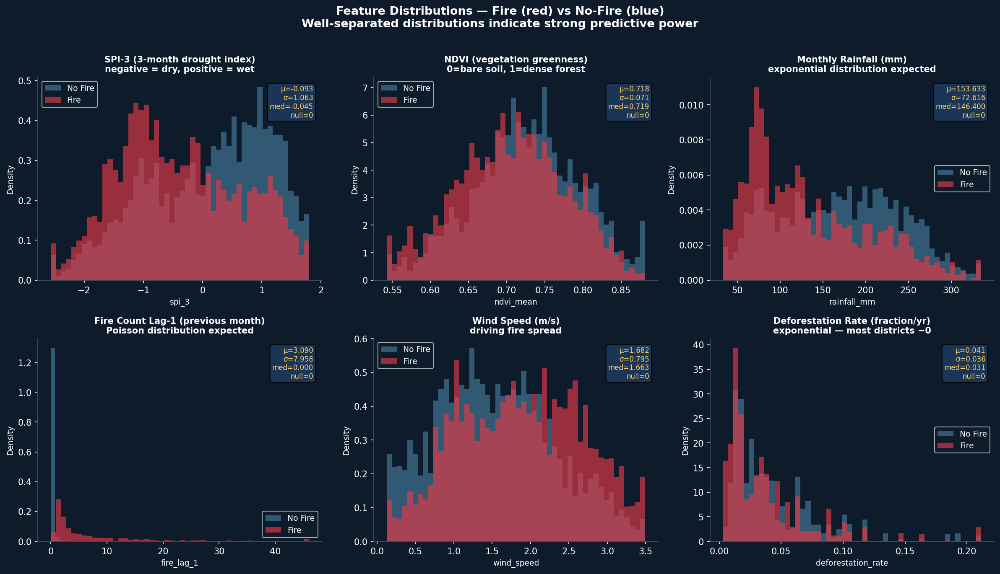
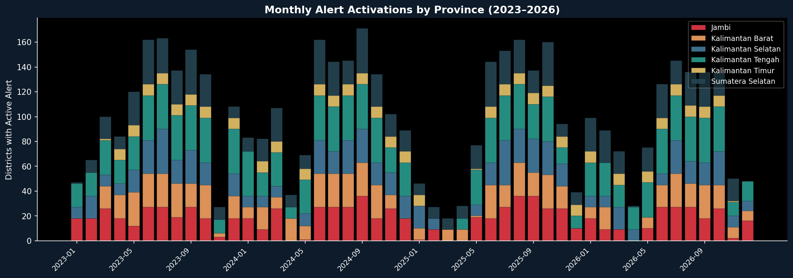

An AI-powered system predicting 72-hour fire risks for vulnerable indigenous communities in Borneo & Sumatra using NASA satellite detections, meteorological data, and XGBoost modeling.
The system integrates real-time active fire detections from NASA's VIIRS and MODIS satellites, combined with 35-year CHIRPS rainfall history to compute localized SPI drought indices. These environmental factors are essential in identifying escalating fire risks before ignition.

Key Insight: Merging the MODIS NDVI vegetation health index with ERA5 wind models allowed the system to construct "upwind neighbor fire exposure," a critical compound risk metric that significantly increased early detection recall.
The goal of the system is operational readiness for indigenous communities in Borneo and Sumatra. Predictions from the XGBoost model are translated into automated, bilingual (English + Bahasa Indonesia) SMS-ready alerts sent a full 72 hours before estimated critical fire exposure.

Ingestion of NASA FIRMS API, Copernicus ERA5 wind data, and CHIRPS rainfall data, aggregated to the GADM district level.
Training an XGBoost Classifier using strict walk-forward temporal cross-validation (no data leakage). Optimized over 50 trials via Optuna targeting the F2-score to prioritize recall over precision.
Utilizing SHAP TreeExplainer to break down why each specific district is flagged for risk, generating actionable transparency for disaster responders.
Rendering predictions on a live, interactive map utilizing Folium choropleths, displaying the 72-hour fire spread projections.
View the complete walk-forward cross-validation pipeline in the repository.